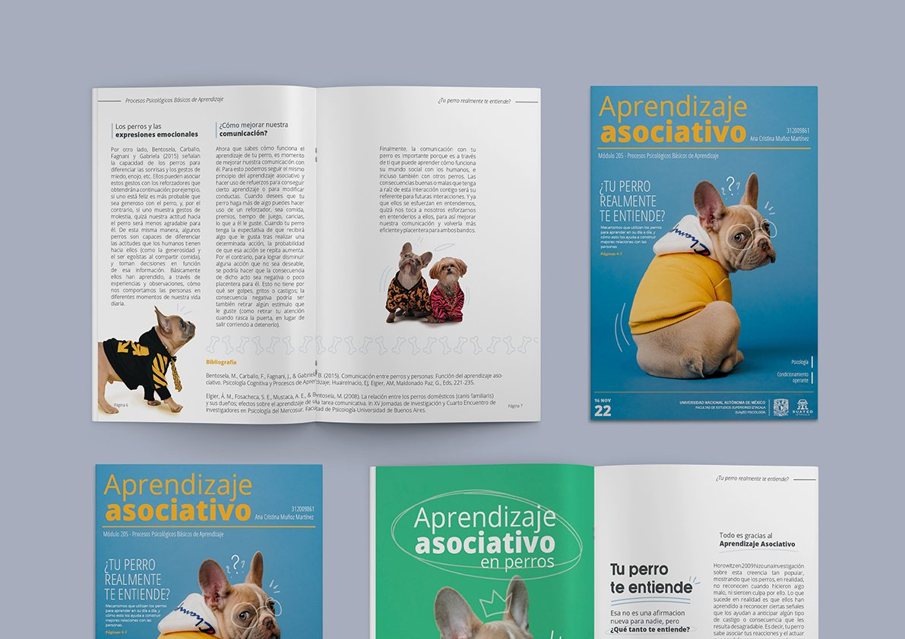

Science Communication Magazine
2022

Context
This magazine was created as a project to communicate concepts related to associative learning in dogs in a clearer and more accessible way. In addition to developing the editorial design, I participated in the documentary research and content development process, aiming to balance accuracy, readability, and visual appeal.
The project involved organizing technical information, establishing visual hierarchies, and designing a reading experience that helped readers understand complex topics without sacrificing depth.
Project Challenges ↓
Readability
Organizing large amounts of text without compromising the reading experience.
Visual Hierarchy
Guiding the reader through titles, images, and editorial elements.
Science Communication
Communicating psychological concepts in an accessible and engaging way.